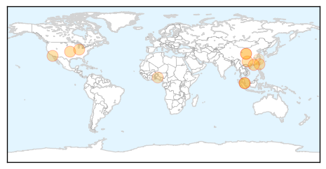

MERS
30-Day Web Trend
1 alerts, 0 warnings

30-Day Twitter Trend
1 alerts, 0 warnings

Article Locations

Article Confidences

Top Articles:
- 1.000
- Nurse from Saudi tests positive for MERS-CoV
- 1.000
- Pinay nurse from Saudi tests positive for MERS-COV
- 1.000
- Filipino female nurse PH’s 1st MERS case; DOH tracking contacts
- 0.999
- REFILE-Filipino nurse from Saudi Arabia tests positive for MERS virusHealthcare
- 0.999
- Filipino nurse from Saudi Arabia tests positive for MERS virus
- 0.999
- Filipino nurse from Saudi Arabia tests positive for MERS virus
- 0.999
- Authorities to contact passengers on Pinay nurse's flight
- 0.999
- Filipino nurse from Saudi Arabia tests positive for MERS virus
- 0.999
- REFILE-Filipino nurse from Saudi Arabia tests positive for MERS virus
- 0.999
- Filipina nurse from Saudi Arabia is PH’s first MERS-CoV case – DOH
- 0.997
- Philippines reports imported MERS case from Saudi Arabia
- 0.996
- Filipina nurse from Saudi tests positive for MERS-CoV
- 0.991
- Tempo - News in a Flash
- 0.989
- Pinay nurse from Saudi positive for MERS-CoV, confined at RITM
- 0.986
- Authorities confirm case of Coronavirus infection
- 0.975
- Philippine gov't takes measures to prevent spread of MERS-CoV - Xinhua
- 0.973
- MERS/CoV no longer public health emergency, says WHOHealthcare
- 0.967
- the edge of knowledge
Top Tweets:
-
No tweets found for Feb 11, 2015
Influenza
30-Day Web Trend
0 alerts, 0 warnings

30-Day Twitter Trend
1 alerts, 0 warnings

Article Locations
Article Confidences

Top Articles:
- 1.000
- Flu Scan for Feb 11, 2015
- 0.999
- :: Influenza cases reach unusual high number this season
- 0.998
- Flu Outbreak in Hong Kong Causes 157 Deaths
- 0.994
- CDC calls for the public to take flu prevention steps as influenza spreads
- 0.987
- 6 things you need to know about flu vaccination, Others news, Health News, AsiaOne YourHealth
- 0.982
- 145 deaths this year as deadly flu bug hits Hong Kong, Others news, Health News, AsiaOne YourHealth
- 0.978
- South Bend-Elkhart among top U.S. cities with flu
- 0.967
- Death Toll in Local Flu Season Rises to 43, with 14 in Last Week
- 0.894
- SGGP English Edition- Vietnam makes concerted efforts to prevent spread of H7N9 viru in border crossigns
- 0.831
- Man dies of bird flu in northwest Yunnan
- 0.763
- Osun, experts on sensitisation drive
- 0.507
- 21 human cases of H7N9 bird ...｜Society｜WCT
Top Tweets:
-
No tweets found for Feb 11, 2015